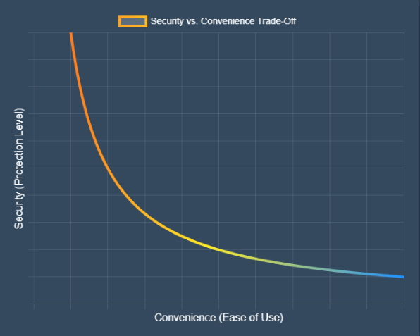

I know it may seem like I stole all your information, but I'm only demonstrating how easy it is for websites to collect personal information. Check for yourself (Source Code)
Big corpos want you to feel safe, they want you to think that they care about your privacy.
But the truth is, they just want to make money off of you. But you aren't entirely powerless. In this page I will tell you about some of the things you can do to protect yourself online.
Privacy is a fundamental right, and protecting it is essential for maintaining our freedom and autonomy in the digital age. When we share personal information online, we risk exposing ourselves to identity theft, financial fraud, and other forms of cybercrime. Additionally, our data can be used to manipulate us through targeted advertising and misinformation campaigns. By understanding the risks and taking steps to protect our privacy, we can safeguard our personal information and maintain control over our digital lives.
Do you want to be a puppet?
OPSEC or Operational Security is the practice of protecting sensitive information from being discovered by adversaries.
Something thats very important to know is that OPSEC is not just about technology, but also about behavior and awareness.
Also keep in mind that OPSEC is linear. The more anonymous you want to be, the more you sacrifice convenience.
Here is a graph to illustrate:

VPNs are often marketed as complete privacy solutions, but they mainly protect traffic between you and the VPN provider.
A VPN can still see your traffic unless it is encrypted end-to-end. Using a bad VPN simply shifts trust from your ISP to the VPN company.
Some VPN companies have exaggerated marketing claims, which is why researching providers matters.
There is only two VPN's that I would even consider using, and those are Mullvad and ProtonVPN.
Mullvad is a VPN that is based in Sweden, and they have a strict no-logs policy. They also accept anonymous payments (That means you can pay through cryptocurrencies or card or even mail them cash. Or if you really want to, you can hand them cash directly at their head quarters.), and they have a good reputation in the privacy community. They are not perfect, but they are one of the best options out there. They also cost 5 euros a month.
ProtonVPN is a VPN that is based in Switzerland, and they also have a strict no-logs policy. They are also a good option, but they are not as good as Mullvad. They also have a free plan, but it is very limited and not recommended for privacy. I also personally don't trust them as they are free.
Browser fingerprinting is a technique used to track and identify users based on their unique browser and device characteristics. It collects information such as screen resolution, installed fonts, browser plugins, and more to create a unique profile for each user. This allows websites and advertisers to track users across the web without relying on cookies. To protect against browser fingerprinting, users can use privacy-focused browsers, disable JavaScript, or use browser extensions that block tracking scripts.
As most of you already know Browsers like Google Chrome and Microsoft Edge are not good for privacy. They are made by companies that make most of their money through advertising, and they use their browsers to collect data on their users to sell to advertisers. They also have a history of being caught collecting data without user consent. If you want a more private browser, I would recommend using Firefox or Brave. Both of these browsers have a strong focus on privacy and security, and they have features that block trackers and fingerprinting.
However if you want an actually good browser, I would suggest using either Librefox (a hardened version of Firefox) or Tor Browser (Even if it was made by the CIA).